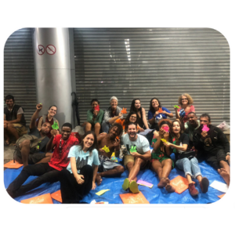

<link rel="stylesheet" href="https://cdnjs.cloudflare.com/ajax/libs/font-awesome/6.6.0/css/all.min.css" integrity="sha512-Kc323vGBEqzTmouAECnVceyQqyqdsSiqLQISBL29aUW4U/M7pSPA/gEUZQqv1cwx4OnYxTxve5UMg5GT6L4JJg==" crossorigin="anonymous" referrerpolicy="no-referrer" />
<!doctype html>
<html lang="pt-br">
  <head>
    <meta charset="utf-8">
    <meta name="viewport" content="width=device-width, initial-scale=1">
    <title>Ajudando Nas Ruas</title>
    <link href="https://cdn.jsdelivr.net/npm/bootstrap@5.3.3/dist/css/bootstrap.min.css" rel="stylesheet" integrity="sha384-QWTKZyjpPEjISv5WaRU9OFeRpok6YctnYmDr5pNlyT2bRjXh0JMhjY6hW+ALEwIH" crossorigin="anonymous">
  </head>
  <body>
    <script src="https://cdn.jsdelivr.net/npm/bootstrap@5.3.3/dist/js/bootstrap.bundle.min.js" integrity="sha384-YvpcrYf0tY3lHB60NNkmXc5s9fDVZLESaAA55NDzOxhy9GkcIdslK1eN7N6jIeHz" crossorigin="anonymous"></script>
  </body>
</html>
<nav style="opacity: 0.5; background-color: black;" class="navbar bg-dark navbar-expand-lg bg-body-tertiary col-12 position-fixed" data-bs-theme="dark">
    <div class="container-fluid">
      <a class="navbar-brand" href="#"></a>
      <button class="navbar-toggler" type="button" data-bs-toggle="collapse" data-bs-target="#navbarNav" aria-controls="navbarNav" aria-expanded="false" aria-label="Toggle navigation">
        <span class="navbar-toggler-icon"></span>
      </button>
      <div class="collapse navbar-collapse" id="navbarNav">
        <ul class="navbar-nav">
          <li class="nav-item">
            <a style="color: rgb(255, 217, 0);" class="nav-link active" aria-current="page" href="#">Home</a>
          </li>
          <li class="nav-item">
            <a class="nav-link" href="#quemsomos">Quem Somos?</a>
          </li>
          <li class="nav-item">
            <a class="nav-link" href="#programas">Programas</a>
          </li>
          <li class="nav-item">
            <a class="nav-link" href="#transferencia">Transferência</a>
          </li>
         <li class="nav-item">
            <a class="nav-link" href="#contato">Contato</a>
         </li>
          <li class="nav-item">
            <a class="nav-link" href="#voluntariado">Voluntariado</a>
          </li>
          <li class="nav-item">
            <a style="background-color: rgb(255, 217, 0); color: black;" class="nav-link" href="#transferencia">Seja um Doador</a>
          </li>
        </ul>
      </div>
    </div>
  </nav>


<a><button type="button" class="btn btn-warning" href="#transferencia">APOIE AQUI</button>
</a>
<div>

</div>
<div style="background-color: rgb(44, 44, 44);">
  <h1 class="text-center" style="color: white;">QUEM SOMOS?</h1>
  
</div>
<div class="row">
 <div class="col text-center">
  
 </div>
 <div class="col text-left">
  <br><br>
  <h6>Somos o Projeto RUAS – Ronda Urbana de Amigos Solidários – uma organização social carioca, sem fins lucrativos.
Somos o Projeto RUAS, uma organização social carioca que apoia a população em situação de rua. Atuamos através de duas iniciativas principais: o programa Rondas, que são rodas de conversa semanais em praças públicas, e o programa Habitação Primeiro, que planeja o acesso à moradia. Com mais de 200 voluntários, realizamos encontros semanais em diversos bairros, oferecendo alimentação, orientação em serviços e cidadania, além de atividades de desenvolvimento social.

Nosso objetivo é gerar oportunidades, fortalecer vínculos e promover a reintegração social da população em situação de rua, que no Brasil cresce constantemente, totalizando 300.868 pessoas em 2024. Trabalhamos diretamente com grupos excluídos e vulneráveis, criando conexões entre essa população e a sociedade civil, incentivando novos começos e garantindo moradia segura e permanente para os assistidos.</h6>
  <br><br><br><br>
</div>

  <h1 class="text-center">Princípios da Organização</h1>
  <div class="text-center">
   
  </div>

 <div class="row">
  <div class="col text-left">
  <h1>Direitos Humanos </h1>
  <h6>Nossas ações respeitam a Declaração Universal dos Direitos Humanos e a Constituição Federal Brasileira.</h6>
  <h1>Diversidade</h1>
  <h6>Nos dá de presente múltiplos pontos de vista. São bem-vindos em nossos espaços todas as idades, gêneros, sexualidades, etnias e realidades sociais.</h6>
</div>
<div class="col text-center">
 
</div>
<div class="col">
  <h1>Apartidarismo</h1>
  <h6>Não somos ligados a nenhum partido político e não recebemos recursos públicos ou de partidos.</h6>
  <h1>Somos Laicos</h1>
  <h6>Não pertencemos a nenhuma ordem religiosa, ainda que façamos o acolhimento de voluntários e atendidos em toda a sua diversidade religiosa.</h6>
</div>
 </div>
</div>
<br id="programas"><br><br><br>
<div class="text-center">
 <h2>PROGRAMAS</h2>
  
 <h4>Na Rua</h4>
</div>
<br><br><br>
<div class="row">
  <div class="col">
    <div  class="text-left">
   <h1>Rondas</h1>
   <h6>Encontros semanais realizados em praças e calçadas, onde criamos um espaço de diálogo e conexão entre pessoas em situação de rua e a comunidade local. Nessas rodas de conversa, promovemos atividades que integram os participantes, oferecendo informações sobre direitos, acesso a serviços e fortalecendo vínculos com a sociedade. Além disso, graças às doações de nossos parceiros, oferecemos refeições para aqueles que atendemos.
Durante as Rondas, desenvolvemos dinâmicas coletivas e atividades lúdicas que estimulam a reflexão, o autoconhecimento e a criação de redes de apoio. Esse espaço é uma oportunidade para que as pessoas em situação de rua recebam orientações e tenham acesso a serviços essenciais de saúde e cidadania, contribuindo para o fortalecimento de sua autonomia e dignidade.</h6>
  </div>
  </div>
  <div class="col text-center">
    
  </div>
</div>
<br><br>
<div class="text-center">
  
 <h4>Moradia</h4>
</div>
<br><br>
<div class="row">
  <div class="col text-center">
  
  </div>
  <div class="col text-left">
    <h1>Habitação Primeiro</h1>
    <h6>
O programa é baseado na metodologia "Housing First" (Moradia Primeiro), reconhecida mundialmente. O objetivo principal é garantir moradia segura e permanente para indivíduos em situação de rua, sem impor pré-condições como sobriedade, tratamento de saúde ou comprovação de emprego.
Além da moradia, oferecemos serviços complementares que visam garantir a estabilidade habitacional e evitar o retorno às ruas, sempre respeitando as escolhas e necessidades individuais de cada pessoa. Nosso compromisso é fortalecer a autonomia dos participantes, oferecendo o suporte necessário para que reconstruam suas vidas de maneira sustentável e contínua.</h6>
  </div>
</div>
<div id="voluntariado" class="text-center" style="background-color: rgb(44, 44, 44);">
 
  <h1 style="color: white;">VOLUNTARIADO</h1>
 
</div>
<br><br><br>
<div class="text-center">
  <h2>Princípios dos Voluntáriados</h2>
  
</div>
  <div class="row">
      <div class="col text-left">
<br><br>
   <h1>O Que é Ser Voluntário Nas Ruas?</h1>
   <h6>Já pensou em fazer parte de um projeto com propósito? Tem vontade de fazer a diferença e ajudar na construção de uma sociedade mais justa?
Somos mais de 200 voluntários ativos e engajados na causa da pop rua!
Como voluntário do RUAS você tem a oportunidade de se desenvolver e se conectar com outras realidades e territórios.
Buscamos pessoas que queiram promover o diálogo e gerar transformação na realidade da população em situação de rua.</h6>
  </div>
  <div class="col text-center">
   
  </div>
  </div>
<div class="row">
 <div class="col text-center">
  
 </div>
 <div class="col">
  <br><br><br>
  <h1> Voluntário de Ronda</h1>
  <h6>Os voluntários participam da organização da ronda, no apoio e encaminhamento aos atendidos, realizam dinâmicas de grupo e distribuem refeições. 
Para se inscrever, basta acessar o link abaixo, se cadastrar no nosso portal de voluntariado e fazer a capacitação online.
Pronto! Agora você pode agendar sua participação em uma de nossas rondas!</h6>
  </div>
</div>
<br><br><br>

<div class="row" style="background-color: rgb(97, 97, 97);">
  <div class="col">
    <h6 id="transferencia" style="color: white;">  contato@ajudaruas.org.br</h6>
    <h6 style="color: white;">Cidade Guarapuava, Rua Bragantina, Bairro Morro ALto, CEP 85067-390</h6>
    <h6 style="color: white;">  PIX 00.000.000/0000-00(CNPJ)</h6>
  </div>
  <div class="col">
    <h4 class="text-center" style="color: white;">MENU</h4>
    <h5 style="color: white;"><i class="fa-solid fa-right-long" style="color: rgb(255, 217, 0);"></i> QUEM SOMOS</h5>
    <h5 style="color: white;"><i class="fa-solid fa-right-long" style="color: rgb(255, 217, 0);"></i> PROGRAMAS</h5>
    <h5 style="color: white;"><i class="fa-solid fa-right-long" style="color: rgb(255, 217, 0);"></i> VOLUNTARIADO</h5>
    <h5 style="color: white;"><i class="fa-solid fa-right-long" style="color: rgb(255, 217, 0);"></i> TRANSFERÊNCIA</h5>
    <h5 style="color: white;"><i class="fa-solid fa-right-long" style="color: rgb(255, 217, 0);"></i> CONTATO</h5>
  </div>
  <div class="col">
    <h4 class="text-center" style="color: white;">INSTAGRAM</h4>
    <h5 style="color: white;" class="text-center">Fale conosco também pelo instagram</h5>
    <h6 style="background-color: rgb(255, 217, 0);"><i style="font-size: 35px; color: rgb(0, 0, 0); background-color: rgb(97, 97, 97);" class="fa-brands fa-instagram"></i> @AJUDANDONASRUAS</h6>
  </div>
</div>

<div id="contato" class="text-center" style="background-color: black; color: rgb(255, 217, 0);">
  <i style="font-size: 35px;" class="fa-brands fa-instagram"></i>
  <i style="font-size: 35px;" class="fa-brands fa-whatsapp"></i>
  <i style="font-size: 35px;" class="fa-brands fa-facebook"></i>
</div><link rel="stylesheet" href="https://cdnjs.cloudflare.com/ajax/libs/font-awesome/6.6.0/css/all.min.css" integrity="sha512-Kc323vGBEqzTmouAECnVceyQqyqdsSiqLQISBL29aUW4U/M7pSPA/gEUZQqv1cwx4OnYxTxve5UMg5GT6L4JJg==" crossorigin="anonymous" referrerpolicy="no-referrer" />
